10. Spherical parts¶
In this tutorial we are going to learn to use another type of solid pieces, the spheres.
Open the FreeCAD application and click on the icon to create a new document
 .
.We select the Part workbench to start designing objects in 3 dimensions.
At this point we are going to add the reference axes to help us place the pieces correctly.
In the menu
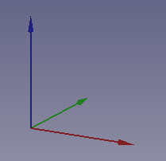View... Activate or deactivate the cross of the axes.Now we create a sphere by clicking the third icon on the solid object bar.
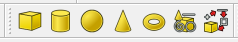We select to see the piece in isometric view.
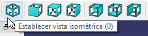The piece will look like the following image.
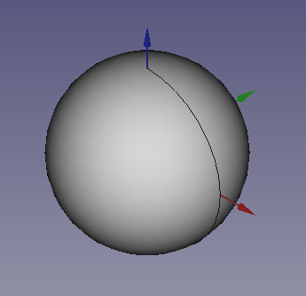Once the sphere is created, we are going to change its size by editing the Radius (Radius) in the data tab so that it has the size of a marble.
Radius (Radius) = 5mm
With the help of this sphere we are going to create a marble holder.
Note
To update the image of the part on the screen, press the function key
F5or in the MenuEdit... Update screen.We copy and paste the sphere eight more times. Next we are going to translate the spheres to form a matrix of 3 x 3 spheres as in the plan view of the following figure.
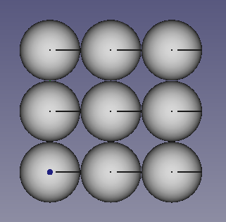Once the spheres have been moved one by one, we will unite all the spheres in a single object to be able to move it easily.
We select all the spheres and click on the union of pieces icon:
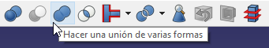We select the Fusion of pieces and we choose the view in Elevation. Menu
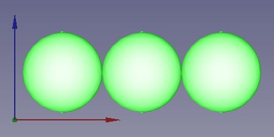View... Standard Views... ElevationNow we translate the set of spheres to the new position
x = 6mm
y = 6mm
z = 6mm
so that they remain as in the figure.
Next we create a cube and give it the following dimensions.
Length (Length) = 32 mm
Width (Width) = 32mm
Height (Height) = 6mm
In isometric view it will look like this.
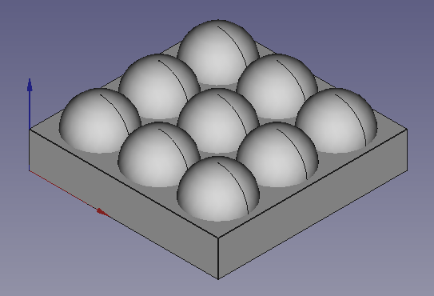Finally we will only have to select the cube, holding the Control key, select the Fusion of spheres and click on the icon for the difference in pieces.
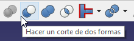With which we will obtain our finished marble holder.
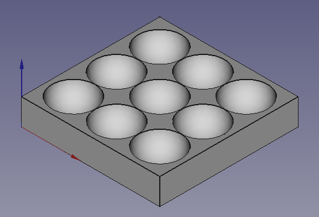
Exercises¶
Create a cube with a sphere trapped inside like the one that can be seen in the following figure.
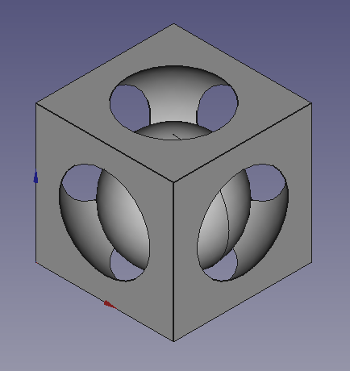The dimensions of the cube will be those of a square of 30 millimeters on each side.
The dimensions of the interior hole (a sphere) will be 18 millimeters in radius and the sphere will have to be moved to the center of the square.
x = 15mm
y = 15mm
z = 15mm
Finally, the small inner sphere will have a radius of 12 millimeters and will have to be moved to the next position.
x = 15mm
y = 15mm
z = 12mm
Create a domino tile like the one in the figure.
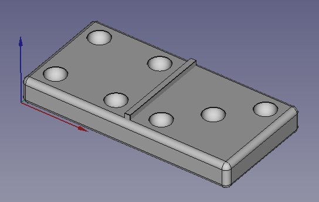The lower base will be created from a cube to which we will give the following dimensions.
Length (Length) = 41 mm
Width (Width) = 20mm
Height (Height) = 5mm
Later we will round all its sides with a radius of 1 millimeter.
The separation sheet in the middle will be another cube, to which we will give the following dimensions.
Length (Length) = 1 mm
Width (Width) = 18mm
Height (Height) = 6mm
Later we will move it to its position in the center of the base.
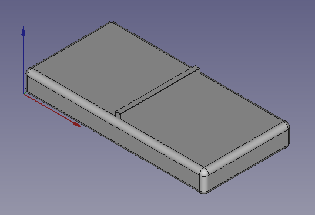Next we will create 1 sphere with a radius of 2mm and translate it to a height z of 5mm.
We will duplicate the sphere 6 times with the Menu
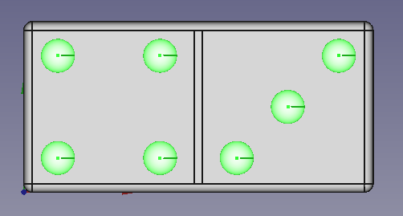Edit... Duplicate the selectionand we will translate the spheres to the positions x and y that can be seen in the following figure.Finally we will unite all the spheres in a single object and subtract the fusion of all the spheres of the lower piece.
Video-tutorial¶
Video: With a pair of spheres